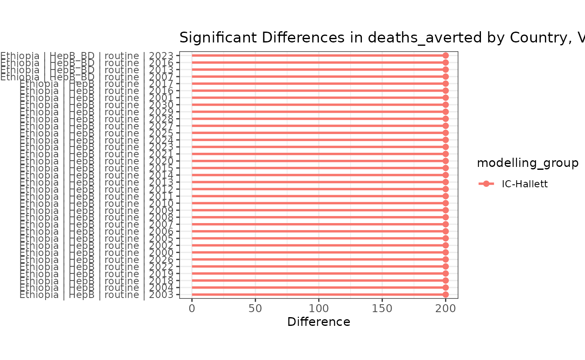
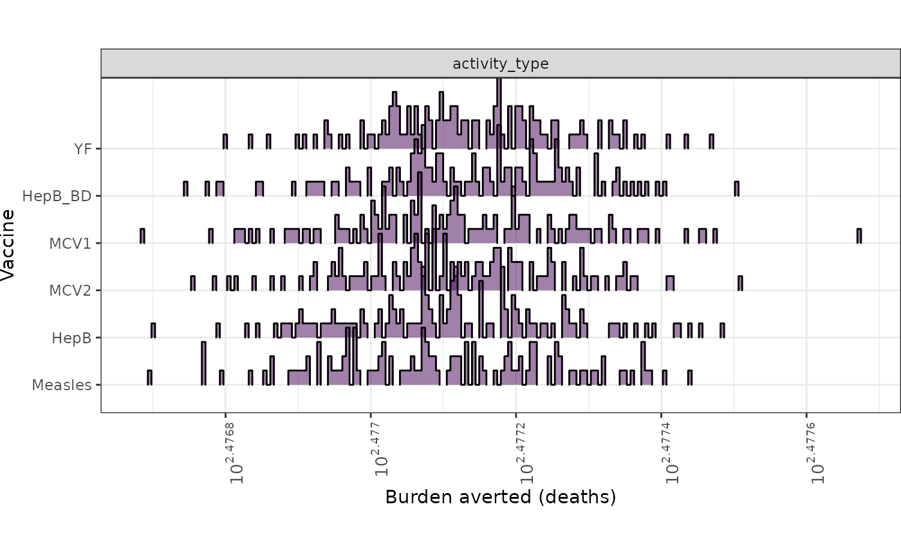
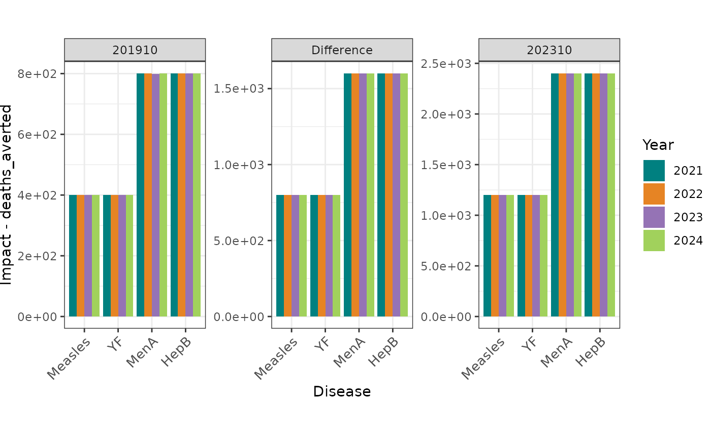
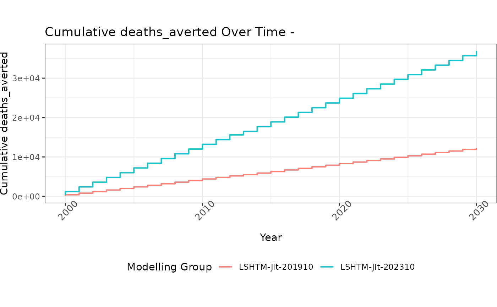

This vignette shows how to use functions added from the pressure testing report.
library(vimcheck)
library(dplyr)
#>
#> Attaching package: 'dplyr'
#> The following objects are masked from 'package:stats':
#>
#> filter, lag
#> The following objects are masked from 'package:base':
#>
#> intersect, setdiff, setequal, union
library(tidyr)Example data
Example impact data are taken from vimpact and included
in the package as eg_impact. This dataset holds projections
for four countries, four diseases, and three modelling groups;
combinations are shown below.
eg_impact
#> # A tibble: 5,396 × 9
#> modelling_group country year vaccine activity_type burden_outcome impact
#> <chr> <chr> <int> <chr> <chr> <chr> <dbl>
#> 1 IC-Garske ETH 2000 YF campaign deaths_averted 0
#> 2 IC-Garske ETH 2000 YF campaign deaths_averted_ra… NA
#> 3 IC-Garske ETH 2000 YF campaign cases_averted 0
#> 4 IC-Garske ETH 2000 YF campaign cases_averted_rate NA
#> 5 IC-Garske ETH 2000 YF campaign dalys_averted 0
#> 6 IC-Garske ETH 2000 YF campaign dalys_averted_rate NA
#> 7 IC-Garske ETH 2001 YF campaign deaths_averted 0
#> 8 IC-Garske ETH 2001 YF campaign deaths_averted_ra… NA
#> 9 IC-Garske ETH 2001 YF campaign cases_averted 0
#> 10 IC-Garske ETH 2001 YF campaign cases_averted_rate NA
#> # ℹ 5,386 more rows
#> # ℹ 2 more variables: disease <chr>, country_name <chr>
# check combinations
distinct(eg_impact, country_name, disease, modelling_group)
#> # A tibble: 14 × 3
#> country_name disease modelling_group
#> <chr> <chr> <chr>
#> 1 Ethiopia YF IC-Garske
#> 2 Nigeria YF IC-Garske
#> 3 Ethiopia HepB IC-Hallett
#> 4 India HepB IC-Hallett
#> 5 Nigeria HepB IC-Hallett
#> 6 Pakistan HepB IC-Hallett
#> 7 Ethiopia MenA LSHTM-Jit
#> 8 India MenA LSHTM-Jit
#> 9 Nigeria MenA LSHTM-Jit
#> 10 Pakistan MenA LSHTM-Jit
#> 11 Ethiopia Measles LSHTM-Jit
#> 12 India Measles LSHTM-Jit
#> 13 Nigeria Measles LSHTM-Jit
#> 14 Pakistan Measles LSHTM-JitData on WHO regions is provided as who_subregions to
enable comparing countries with their regions.
who_subregions
#> # A tibble: 249 × 9
#> choice_subregion country_name country Global.Name Region.Name Sub.region
#> <chr> <chr> <chr> <chr> <chr> <chr>
#> 1 EMR D Afghanistan AFG World Asia Southern …
#> 2 AFR D Angola AGO World Africa Sub-Sahar…
#> 3 EUR B Albania ALB World Europe Southern …
#> 4 EUR A Andorra AND World Europe Southern …
#> 5 EMR B United Arab Emir… ARE World Asia Western A…
#> 6 AMR B Argentina ARG World Americas Latin Ame…
#> 7 EUR B Armenia ARM World Asia Western A…
#> 8 AMR B Antigua and Barb… ATG World Americas Latin Ame…
#> 9 WPR A Australia AUS World Oceania Australia…
#> 10 EUR A Austria AUT World Europe Western E…
#> # ℹ 239 more rows
#> # ℹ 3 more variables: Intermediate.Region.Name <chr>, subregion <chr>,
#> # vimc117 <dbl>Filtering impact data
Impact data can be filtered, or flagged for filtering, in different ways.
Filtering on touchstone
Data can be filtered on touchstone using
filter_recent_ts(); rows with scenario_type
matching “default” are retained.
Some useful default touchstone values are
DEF_TOUCHSTONE_NEW (202310),
DEF_TOUCHSTONE_OLD (201910), and
DEF_TOUCHSTONE_OLD_OLD (202110)
# assign dummy touchstones and scenario type for demo
df <- eg_impact
df$touchstone <- "202401"
test_scenario_types <- rep(
c("default", "dummy"),
each = nrow(df) / 2
)
df$scenario_type <- test_scenario_types
# use a package default touchstone
DEF_TOUCHSTONE_NEW
#> [1] "202310"
# touchstone filtering is applied to all non-default scenario rows
filter_recent_ts(df, DEF_TOUCHSTONE_NEW)
#> # A tibble: 2,698 × 11
#> modelling_group country year vaccine activity_type burden_outcome impact
#> <chr> <chr> <int> <chr> <chr> <chr> <dbl>
#> 1 IC-Garske ETH 2000 YF campaign deaths_averted 0
#> 2 IC-Garske ETH 2000 YF campaign deaths_averted_ra… NA
#> 3 IC-Garske ETH 2000 YF campaign cases_averted 0
#> 4 IC-Garske ETH 2000 YF campaign cases_averted_rate NA
#> 5 IC-Garske ETH 2000 YF campaign dalys_averted 0
#> 6 IC-Garske ETH 2000 YF campaign dalys_averted_rate NA
#> 7 IC-Garske ETH 2001 YF campaign deaths_averted 0
#> 8 IC-Garske ETH 2001 YF campaign deaths_averted_ra… NA
#> 9 IC-Garske ETH 2001 YF campaign cases_averted 0
#> 10 IC-Garske ETH 2001 YF campaign cases_averted_rate NA
#> # ℹ 2,688 more rows
#> # ℹ 4 more variables: disease <chr>, country_name <chr>, touchstone <chr>,
#> # scenario_type <chr>Filtering on diseases
Data can be filtered to exclude a fixed set of diseases, if the
touchstone is older than a threshold value, using
filter_excluded_diseases_ts().
The excluded diseases are stored as the package constant
EXCLUDED_DISEASES ().
# make a copy and add dummy disease values
df_copy <- df
df_copy$disease <- rep(
EXCLUDED_DISEASES,
each = nrow(df_copy) / length(EXCLUDED_DISEASES)
)
# pass dummy touchstone to filter out all rows
filter_excluded_diseases_ts(df_copy, "202501")
#> # A tibble: 0 × 11
#> # ℹ 11 variables: modelling_group <chr>, country <chr>, year <int>,
#> # vaccine <chr>, activity_type <chr>, burden_outcome <chr>, impact <dbl>,
#> # disease <chr>, country_name <chr>, touchstone <chr>, scenario_type <chr>Flagging duplicates
Duplicated rows in the data can be identifier by adding a flag
variable column n_key, using
flag_duplicates().
Duplicates are identified across columns specified by the argument
key_cols, which defaults to .
# view n_keys column
flag_duplicates(eg_impact) %>%
select(
modelling_group, country, disease, burden_outcome,
vaccine, activity_type, year, n_key
)
#> Warning: 1860 duplicates found in data; please check for plausibility!
#> # A tibble: 5,396 × 8
#> modelling_group country disease burden_outcome vaccine activity_type year
#> <chr> <chr> <chr> <chr> <chr> <chr> <int>
#> 1 IC-Garske ETH YF deaths_averted YF campaign 2000
#> 2 IC-Garske ETH YF deaths_averted_r… YF campaign 2000
#> 3 IC-Garske ETH YF cases_averted YF campaign 2000
#> 4 IC-Garske ETH YF cases_averted_ra… YF campaign 2000
#> 5 IC-Garske ETH YF dalys_averted YF campaign 2000
#> 6 IC-Garske ETH YF dalys_averted_ra… YF campaign 2000
#> 7 IC-Garske ETH YF deaths_averted YF campaign 2001
#> 8 IC-Garske ETH YF deaths_averted_r… YF campaign 2001
#> 9 IC-Garske ETH YF cases_averted YF campaign 2001
#> 10 IC-Garske ETH YF cases_averted_ra… YF campaign 2001
#> # ℹ 5,386 more rows
#> # ℹ 1 more variable: n_key <int>Filtering invalid trajectories
The function filter_invalid_trajectories() can be used
to remove rows where outcome values are missing in one of two paired
datasets (each ideally from a different touchstone).
This function should be applied to data which has the impact outcomes as columns (i.e., in wide format), with duplicates removed.
The outcome to check is specified by the argument
"outcome".
# create some dummy data from exampled data
prev_df <- flag_duplicates(eg_impact)
#> Warning: 1860 duplicates found in data; please check for plausibility!
prev_df <- dplyr::filter(prev_df, n_key == 1)
prev_df <- tidyr::pivot_wider(
prev_df,
id_cols = {{ COLNAMES_KEY_PRESSURE_TEST }},
names_from = "burden_outcome",
values_from = "impact"
)
# will be replaced by proportion of GAVI support in future
prev_df$support_type <- "other"
rows <- nrow(prev_df)
prev_df$coverage <- 0.5
prev_df$deaths_averted <- withr::with_seed(
1, sample(c(5e2, NA_real_), rows, TRUE)
)
prev_df$dalys_averted <- withr::with_seed(
1, sample(c(5e5, NA_real_), rows, TRUE)
)
# assign dummy values
curr_df <- prev_df
curr_df$deaths_averted <- 1e3
curr_df$dalys_averted <- 1e6
# View data with invalid trajectories removed
filter_invalid_trajectories(prev_df, curr_df, "deaths_averted")
#> # A tibble: 369 × 9
#> country country_name vaccine activity_type year disease modelling_group
#> <chr> <chr> <chr> <chr> <int> <chr> <chr>
#> 1 ETH Ethiopia YF campaign 2001 YF IC-Garske
#> 2 ETH Ethiopia YF campaign 2004 YF IC-Garske
#> 3 ETH Ethiopia YF campaign 2008 YF IC-Garske
#> 4 ETH Ethiopia YF campaign 2009 YF IC-Garske
#> 5 ETH Ethiopia YF campaign 2015 YF IC-Garske
#> 6 ETH Ethiopia YF campaign 2016 YF IC-Garske
#> 7 ETH Ethiopia YF campaign 2017 YF IC-Garske
#> 8 ETH Ethiopia YF campaign 2018 YF IC-Garske
#> 9 ETH Ethiopia YF campaign 2026 YF IC-Garske
#> 10 ETH Ethiopia YF campaign 2029 YF IC-Garske
#> # ℹ 359 more rows
#> # ℹ 2 more variables: outcome_prev <dbl>, outcome_cur <dbl>Identifying differences between datasets
This section provides a general demonstration of tools that help to identify differences between two paired datasets.
Generating differences
The function generate_diffs() uses the diffdf
package to identify differences between two data frames. The output
is a list of tibbles with the added column VARIABLE for the
column examined for differences, with the baseline and comparator as
BASE and COMPARE.
# use prev_df from section above
prev_df$deaths_averted <- withr::with_seed(
1, rnorm(rows, 1e3, 100)
)
prev_df$dalys_averted <- withr::with_seed(
1, rnorm(rows, 1e6, 100)
)
# assign dummy values
curr_df <- prev_df
curr_df$deaths_averted <- prev_df$deaths_averted * 2
curr_df$dalys_averted <- prev_df$dalys_averted * 2
interest_cols <- c("deaths_averted", "dalys_averted")
difflist <- generate_diffs(
prev_df,
curr_df,
interest_cols
)
#> Warning in diffdf::diffdf(prev_df[, cols_needed], curr_df[, cols_needed], :
#> Not all Values Compared Equal
# all rows are different - view the output types
names(difflist)
#> [1] "deaths_averted" "dalys_averted"
difflist
#> $deaths_averted
#> # A tibble: 743 × 11
#> VARIABLE country country_name vaccine activity_type year disease
#> * <chr> <chr> <chr> <chr> <chr> <int> <chr>
#> 1 deaths_averted ETH Ethiopia HepB routine 2000 HepB
#> 2 deaths_averted ETH Ethiopia HepB routine 2001 HepB
#> 3 deaths_averted ETH Ethiopia HepB routine 2002 HepB
#> 4 deaths_averted ETH Ethiopia HepB routine 2003 HepB
#> 5 deaths_averted ETH Ethiopia HepB routine 2004 HepB
#> 6 deaths_averted ETH Ethiopia HepB routine 2005 HepB
#> 7 deaths_averted ETH Ethiopia HepB routine 2006 HepB
#> 8 deaths_averted ETH Ethiopia HepB routine 2007 HepB
#> 9 deaths_averted ETH Ethiopia HepB routine 2008 HepB
#> 10 deaths_averted ETH Ethiopia HepB routine 2009 HepB
#> # ℹ 733 more rows
#> # ℹ 4 more variables: modelling_group <chr>, campaign_id <int>, BASE <dbl>,
#> # COMPARE <dbl>
#>
#> $dalys_averted
#> # A tibble: 743 × 11
#> VARIABLE country country_name vaccine activity_type year disease
#> * <chr> <chr> <chr> <chr> <chr> <int> <chr>
#> 1 dalys_averted ETH Ethiopia HepB routine 2000 HepB
#> 2 dalys_averted ETH Ethiopia HepB routine 2001 HepB
#> 3 dalys_averted ETH Ethiopia HepB routine 2002 HepB
#> 4 dalys_averted ETH Ethiopia HepB routine 2003 HepB
#> 5 dalys_averted ETH Ethiopia HepB routine 2004 HepB
#> 6 dalys_averted ETH Ethiopia HepB routine 2005 HepB
#> 7 dalys_averted ETH Ethiopia HepB routine 2006 HepB
#> 8 dalys_averted ETH Ethiopia HepB routine 2007 HepB
#> 9 dalys_averted ETH Ethiopia HepB routine 2008 HepB
#> 10 dalys_averted ETH Ethiopia HepB routine 2009 HepB
#> # ℹ 733 more rows
#> # ℹ 4 more variables: modelling_group <chr>, campaign_id <int>, BASE <dbl>,
#> # COMPARE <dbl>Generate national IQRs
The function generate_national_iqr() generates the
inter-quartile range of the impact outcome for a dataset.
# assign dummy values to check functionality
df <- prev_df
df$deaths_averted <- withr::with_seed(
1, rnorm(rows, 1e3, 100)
)
iqr_df <- gen_national_iqr(df, value_cols = "deaths_averted")
iqr_df
#> # A tibble: 24 × 4
#> country vaccine activity_type national_iqr_deaths_averted
#> <chr> <chr> <chr> <dbl>
#> 1 ETH HepB routine 102.
#> 2 ETH HepB_BD routine 112.
#> 3 ETH MCV1 routine 163.
#> 4 ETH MCV2 routine 117.
#> 5 ETH Measles campaign 148.
#> 6 ETH YF campaign 115.
#> 7 ETH YF routine 116.
#> 8 IND HepB routine 129.
#> 9 IND HepB_BD routine 133.
#> 10 IND MCV1 routine 125.
#> # ℹ 14 more rowsFlag large differences
The function flag_large_diffs() can be used with the
outputs of generate_diffs() and
gen_national_iqr() to find rows where the impact estimate
is outside the range expected, given the IQR.
# assign some dummy values that will trigger flagging
difflist2 <- difflist
difflist2$deaths_averted$COMPARE <- 1e9 # typical values for BASE are ~1000
# all rows are flagged as having differences > IQR
flag_large_diffs(difflist2, iqr_df, "deaths_averted")
#> # A tibble: 743 × 9
#> country country_name year vaccine modelling_group activity_type `202110`
#> <chr> <chr> <int> <chr> <chr> <chr> <dbl>
#> 1 NGA Nigeria 2011 MCV1 LSHTM-Jit routine 699.
#> 2 IND India 2004 Measles LSHTM-Jit campaign 706.
#> 3 PAK Pakistan 2014 HepB IC-Hallett routine 711.
#> 4 PAK Pakistan 2019 HepB_BD IC-Hallett routine 741.
#> 5 ETH Ethiopia 2014 MCV2 LSHTM-Jit routine 747.
#> 6 NGA Nigeria 2015 Measles LSHTM-Jit campaign 756.
#> 7 ETH Ethiopia 2020 Measles LSHTM-Jit campaign 757.
#> 8 PAK Pakistan 2003 Measles LSHTM-Jit campaign 759.
#> 9 ETH Ethiopia 2008 HepB_BD IC-Hallett routine 760.
#> 10 NGA Nigeria 2015 MCV1 LSHTM-Jit routine 766.
#> # ℹ 733 more rows
#> # ℹ 2 more variables: `202310` <dbl>, diff <dbl>Generate a combined dataset
gen_combined_df() can be used to generate a combined
dataset across two different touchstones.
# regenerate data
prev_df <- flag_duplicates(eg_impact)
#> Warning: 1860 duplicates found in data; please check for plausibility!
prev_df <- dplyr::filter(prev_df, n_key == 1)
prev_df <- tidyr::pivot_wider(
prev_df,
id_cols = {{ COLNAMES_KEY_PRESSURE_TEST }},
names_from = "burden_outcome",
values_from = "impact"
)
prev_df$support_type <- "other" # unsure what values this can take
prev_df$coverage <- 0.5
prev_df$fvps <- 1e6
prev_df$target_population <- 2e6
prev_df$touchstone <- "202010"
# assign dummy values
curr_df <- prev_df
curr_df$deaths_averted <- 1e6
curr_df$dalys_averted <- 1e9
curr_df$touchstone <- "202110"
gen_combined_df(prev_df, curr_df)
#> # A tibble: 743 × 11
#> country country_name disease vaccine activity_type year modelling_group
#> <chr> <chr> <chr> <chr> <chr> <int> <chr>
#> 1 ETH Ethiopia YF YF campaign 2000 IC-Garske
#> 2 ETH Ethiopia YF YF campaign 2001 IC-Garske
#> 3 ETH Ethiopia YF YF campaign 2002 IC-Garske
#> 4 ETH Ethiopia YF YF campaign 2003 IC-Garske
#> 5 ETH Ethiopia YF YF campaign 2004 IC-Garske
#> 6 ETH Ethiopia YF YF campaign 2005 IC-Garske
#> 7 ETH Ethiopia YF YF campaign 2006 IC-Garske
#> 8 ETH Ethiopia YF YF campaign 2007 IC-Garske
#> 9 ETH Ethiopia YF YF campaign 2008 IC-Garske
#> 10 ETH Ethiopia YF YF campaign 2009 IC-Garske
#> # ℹ 733 more rows
#> # ℹ 4 more variables: deaths_averted_old <dbl>, deaths_averted_new <dbl>,
#> # dalys_averted_old <dbl>, dalys_averted_new <dbl>Comparing national values to regional values
compare_natl_subreg() allows comparing national impact
rates with regional rates, where regions are the WHO regions.
There is no example for this functionality as yet.
Plotting functions
This section covers plotting functions.
First we prepare some dummy data for plotting.
# preparatory code with dummy data
prev_df <- flag_duplicates(eg_impact)
#> Warning: 1860 duplicates found in data; please check for plausibility!
prev_df <- dplyr::filter(prev_df, n_key == 1)
prev_df <- tidyr::pivot_wider(
prev_df,
id_cols = {{ COLNAMES_KEY_PRESSURE_TEST }},
names_from = "burden_outcome",
values_from = "impact"
)
prev_df$support_type <- "other" # unsure what values this can take
prev_df$coverage <- 0.5
prev_df$fvps <- 1e6
prev_df$target_population <- 2e6
prev_df$deaths_averted <- withr::with_seed(
1,
rnorm(nrow(prev_df), 100, 0.1)
)
prev_df$dalys_averted <- prev_df$deaths_averted * 100
prev_df$touchstone <- "202010"
# assign dummy values
curr_df <- prev_df
curr_df$deaths_averted <- withr::with_seed(
1,
rnorm(nrow(prev_df), 300, 0.1)
)
curr_df$dalys_averted <- curr_df$deaths_averted * 100
curr_df$touchstone <- "202110"
interest_cols <- c("deaths_averted", "dalys_averted")
changes <- generate_diffs(
prev_df,
curr_df,
interest_cols
)
#> Warning in diffdf::diffdf(prev_df[, cols_needed], curr_df[, cols_needed], :
#> Not all Values Compared Equal
# national IQR - inset dummy values for tests
national_iqr <- gen_national_iqr(prev_df)
national_iqr$national_iqr_deaths_averted <- seq_len(nrow(national_iqr))Plotting significant differences
Find and flag large diffs using flag_large_diffs() and
visualise the output using plot_sig_diff().
flag_large_diffs(changes, national_iqr) |>
plot_sig_diff()
Plotting modelling group variation
Visualise variation in impact by modelling group using
plot_modelling_group_variation().
Data should be prepared using prep_plot_mod_grp_varn()
first.
prev_df_copy <- dplyr::select(curr_df, vaccine, modelling_group) %>%
dplyr::distinct() %>%
dplyr::group_by(vaccine) %>%
dplyr::mutate(mod_num = dplyr::row_number())
prep_plot_mod_grp_varn(curr_df, prev_df_copy) |>
plot_modelling_group_variation()
Plotting GAVI vaccination
Use plot_vaccine_gavi() on data that has been prepared
using prep_plot_vax_gavi().
prep_plot_vax_gavi(curr_df, prev_df, "deaths_averted") |>
plot_vaccine_gavi()
Plot cumulative values
Use plot_cumul() on data prepared using
prep_plot_cumul() and gen_combined_df().
gen_combined_df(prev_df, curr_df) |>
prep_plot_cumul("deaths_averted", "Measles") |>
plot_cumul()
#> Warning: There were 62 warnings in `dplyr::summarise()`.
#> The first warning was:
#> ℹ In argument: `avg_deaths_averted = mean(...)`.
#> ℹ In group 1: `year = 2000`, `touchstone = 201910`.
#> Caused by warning in `mean.default()`:
#> ! argument is not numeric or logical: returning NA
#> ℹ Run `dplyr::last_dplyr_warnings()` to see the 61 remaining warnings.